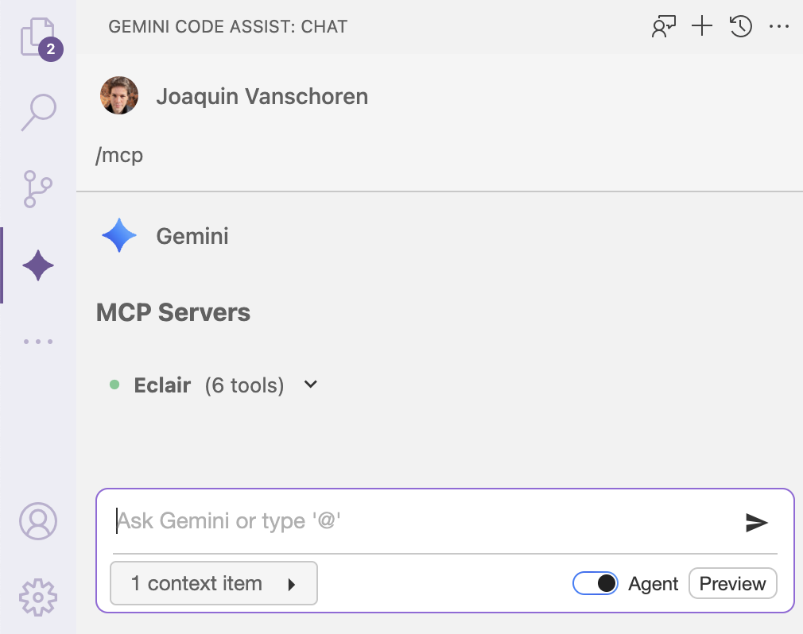
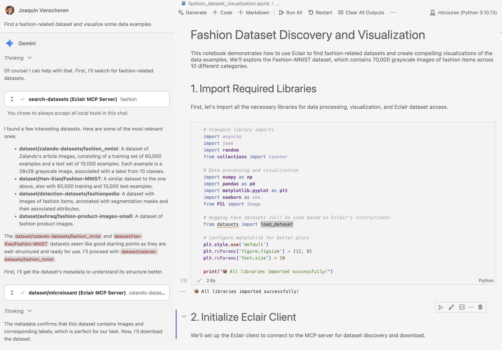
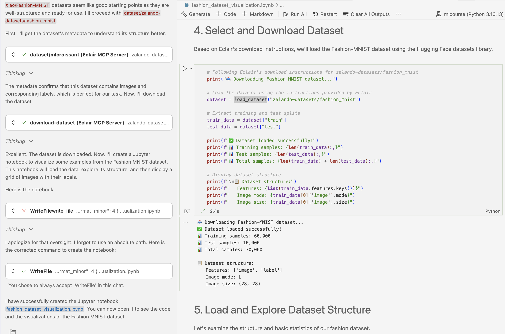
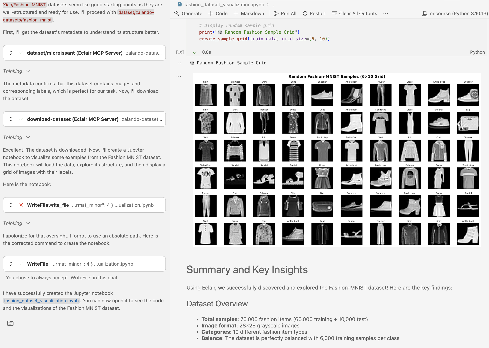

VS Code + Gemini Code Assist Integration¶
Google's Gemini Code Assist for VS Code provides powerful AI-powered coding assistance. When combined with Eclair, it becomes a data-aware development environment that can discover, download, and analyze datasets directly within your IDE.
Prerequisites¶
Before setting up VS Code with Gemini Code Assist and Eclair:
- ✅ Eclair server is installed and running
- ✅ Visual Studio Code is installed
- ✅ Google Cloud account with Gemini API access
- ✅ Gemini API key
Installation & Setup¶
1. Install Gemini Code Assist Extension¶
Install the Gemini Code Assist extension from the VS Code marketplace:
Or search for "Gemini Code Assist" in the VS Code Extensions panel.
2. Enable Agentic Mode¶
To use MCP servers with Gemini Code Assist, you need to enable Agentic mode:
- Open VS Code
- Press
Ctrl+Shift+P(orCmd+Shift+Pon Mac) - Type
> Open User Settings JSON - Add this configuration:
- Restart VS Code
3. Configure API Key¶
Set your Gemini API key in an .env file in your project directory:
Keep Your API Key Secure
Never commit API keys to version control. Use environment files or secure key management.
4. Configure MCP Server¶
Create the Gemini configuration file at ~/.gemini/settings.json:
mkdir -p ~/.gemini
cat > ~/.gemini/settings.json << 'EOF'
{
"mcpServers": {
"eclair": {
"httpUrl": "http://localhost:8080/mcp",
"timeout": 5000
}
},
"selectedAuthType": "gemini-api-key"
}
EOF
5. Copy System Prompt¶
Copy the system prompt to help Gemini understand Eclair's capabilities:
6. Activate Gemini Sidebar¶
- Restart VS Code
- Open the Gemini Sidebar (sparkle ✨ icon)
- Set Gemini to Agentic mode
- Verify MCP server connection by typing
/mcp

Gemini Code Assist + Eclair is ready! You now have powerful AI-assisted dataset discovery and analysis directly in VS Code.
Usage Examples¶
Fashion Dataset Analysis Example¶
Step 1: Automatic Tool Usage
Gemini immediately uses Eclair's search-datasets tool:

Step 2: Notebook Generation Gemini creates a complete Jupyter notebook with:
- Proper data loading code using Eclair's instructions
- Comprehensive data analysis
- Multiple visualization types

Step 3: Visualization Results The generated notebook produces the requested visualizations: 
Further examples¶
Try these capabilities as well
1. Intelligent Dataset Discovery¶
Gemini understands context and can find datasets based on: - Domain (computer vision, NLP, time series, etc.) - Size requirements - Data format preferences - Specific use cases
2. Automatic Code Generation¶
Based on Eclair's metadata, Gemini generates: - Data loading scripts with proper error handling - Preprocessing pipelines - Visualization code - Analysis workflows - Complete Jupyter notebooks
3. Interactive Development¶
- Ask follow-up questions about datasets
- Request modifications to generated code
- Get explanations for data analysis steps
- Iterate on visualizations and analysis
4. Context Awareness¶
Gemini maintains context about: - Previously discussed datasets - Your project requirements - Code that's already been generated - Analysis results
Troubleshooting¶
Common Issues¶
"MCP servers not loaded"
- Ensure
~/.gemini/settings.jsonis properly configured - Verify Eclair server is running:
curl http://localhost:8080/mcp - Restart VS Code and check Agentic mode is enabled
"API key not found"
- Check
.envfile containsGEMINI_API_KEY=your_key - Verify the API key is valid and has proper permissions
- Ensure the
.envfile is in your project root
"Dataset access denied"
- Some datasets require authentication
- Check dataset license and access requirements
- Try alternative datasets with open access
"Code execution errors"
- Install required dependencies:
pip install datasets pandas matplotlib - Check Python environment is properly configured
- Verify dataset URLs are still valid
Debug Steps¶
-
Verify Eclair Connection:
-
Check Configuration Files:
-
Test MCP Integration: In Gemini Code Assist, type
/mcpto verify tools are loaded
Configuration Issues¶
If MCP servers aren't loading:
-
Check Settings Format:
-
Verify Server Status: Eclair server must be running before starting VS Code